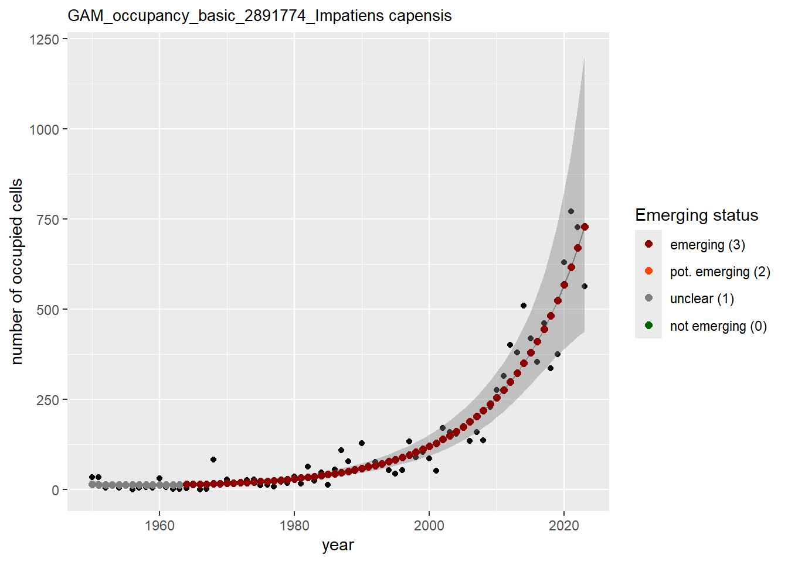

Code
library(readr)
library(dplyr)
library(patchwork)
library(tidyr)
library(purrr)
library(tibble)
library(trias)This document shows an example of how using GBIF species occurrence cubes to assess the emerging status of some (alien) species in Europe. This workflow is strongly based on occurrence TrIAS indicators.
First, list and load the needed packages.
library(readr)
library(dplyr)
library(patchwork)
library(tidyr)
library(purrr)
library(tibble)
library(trias)Species of interest:
Impatiens capensis (GBIF key: 2891774)
Xenopus laevis (GBIF key: 5217334)
Myriophyllum heterophyllum (GBIF key: 5361762)
Contarinia pseudotsugae (GBIF key: 5082110)
Procyon lotor (GBIF key: 5218786)
Halyomorpha halys (GBIF key: 4485843)
Vespa velutina (GBIF key: 1311477)
Cydalima perspectalis (GBIF key: 4532122)
Exaireta spinigera (GBIF key: 1579447)
Hermetia illucens (GBIF key: 1577153)
species <- tibble::tibble(
specieskey = c(2891774,
5217334,
5361762,
5082110,
5218786,
4485843,
1311477,
4532122,
1579447,
1577153,
2882316),
canonical_name = c("Impatiens capensis",
"Xenopus laevis",
"Myriophyllum heterophyllum",
"Contarinia pseudotsugae",
"Procyon lotor",
"Halyomorpha halys",
"Vespa velutina",
"Cydalima perspectalis",
"Exaireta spinigera",
"Hermetia illucens",
"Fagus sylvatica")
)We are interested over the emerging status of the four species in Europe.
We request a species occurrence cube based on data from 1950.
We triggered a GBIF occurrence cube via the Occurrence SQL Download API and on the hand of a JSON query (query_for_GAM_graphs.json). The resulting cube (DOI: 10.15468/dl.nsa8b3, downloadKey: 0001083-250121130708018) can be downloaded in TSV format from GBIF. We have it saved at data/input as 0001083-250121130708018.csv:
cube <- readr::read_tsv(
here::here(
"data",
"input",
"0001083-250121130708018.csv"
)
)Preview:
head(cube)We assess the emerging status of the species in Europe for 2023. First, we create time series up to 2023 as the data of 2024 could be not yet entirely published.
last_year <- 2023For each species, define cells with at least one observation:
df_cc <- cube |>
dplyr::group_by(specieskey) |>
dplyr::distinct(eeacellcode) |>
dplyr::ungroup()For each species, identify the first year with at least one observation:
df_begin_year <-
cube |>
dplyr::group_by(specieskey) |>
dplyr::summarize(begin_year = min(year))For each species, combine begin_year and unique eeacellcode as found above:
df_cc <- df_cc |>
dplyr::left_join(df_begin_year, by = "specieskey") |>
dplyr::select(specieskey, begin_year, eeacellcode)Preview:
head(df_cc)For each cell (eeacellcode) and species (specieskey) we can now create a time series:
# Define help function
make_time_series <- function(eeacellcode, specieskey, begin_year, last_year) {
tidyr::expand_grid(
eeacellcode = eeacellcode,
specieskey = specieskey,
year = seq(from = begin_year, to = last_year)
)
}
# Create timeseries slots
df_ts <- purrr::pmap_dfr(df_cc,
.f = make_time_series,
last_year = last_year
)
# Add occurrence data
df_ts <-
df_ts |>
dplyr::left_join(
cube |> dplyr::select(
specieskey,
year,
eeacellcode,
occurrences
),
by = c("specieskey", "year", "eeacellcode")
)
# Replace NAs with 0
df_ts <-
df_ts |>
tidyr::replace_na(list(occurrences = 0))Add column for presence (1) or absence (0):
df_ts <-
df_ts |>
dplyr::mutate(
ispresent = dplyr::if_else(occurrences > 0, 1, 0)
)Save the time series as an interim output:
readr::write_tsv(
df_ts,
here::here("data", "interim", "time_series.tsv"),
na = ""
)We are now ready to apply GAM to assess the emerging status of the four species in 2023.
eval_year <- 2023Let’s compact the time series:
compact_df_ts <- df_ts |>
dplyr::group_by(specieskey, year) |>
dplyr::summarise(
occs = sum(occurrences),
ncells = sum(ispresent),
.groups = "drop")Plots will be saved in ./data/output/GAM_outputs directory:
dir_name_basic <- here::here("data", "output", "GAM_outputs")We also define the plot dimensions in pixels:
plot_dimensions <- list(width = 2800, height = 1500)We apply GAM for each taxon for the number of occurrences:
gam_occs <- purrr::map2(
species$specieskey, species$canonical_name,
function(t, n) {
df_key <- compact_df_ts |>
dplyr::filter(specieskey == t)
trias::apply_gam(
df = df_key,
y_var = "occs",
taxonKey = "specieskey",
eval_years = 2023,
type_indicator = "observations",
taxon_key = t,
name = n,
dir_name = dir_name_basic,
y_label = "observations",
saveplot = TRUE,
width = plot_dimensions$width,
height = plot_dimensions$height
)
})
names(gam_occs) <- species$canonical_nameAnd the number of occupied cells, or measured occupancy:
gam_ncells <- purrr::map2(
species$specieskey, species$canonical_name,
function(t, n) {
df_key <- compact_df_ts |>
dplyr::filter(specieskey == t)
trias::apply_gam(
df = df_key,
y_var = "ncells",
taxonKey = "specieskey",
eval_years = 2023,
type_indicator = "occupancy",
taxon_key = t,
name = n,
dir_name = dir_name_basic,
y_label = "number of occupied cells",
saveplot = TRUE,
width = plot_dimensions$width,
height = plot_dimensions$height
)
})
names(gam_ncells) <- species$canonical_namePlease go to ./data/output/GAM_outputs to download the plots shown in this section.
In this section we show and save the plots as returned by apply_gam(). Folder: ./data/output/GAM_outputs.
purrr::walk(gam_occs, function(x) print(x$plot))


purrr::walk(gam_ncells, function(x) print(x$plot))


We show and save plots with the species only as title. We save them in sub folder ./data/output/GAM_outputs/short_title.
purrr::iwalk(gam_occs, function(x, y) {
x$plot <- x$plot +
# remove title from plot objects
ggplot2::ggtitle(label = y)
ggplot2::ggsave(
filename = here::here("data",
"output",
"GAM_outputs",
"short_title",
paste0(y, "_occurrences_short_title.png")),
plot = x$plot,
width = plot_dimensions$width,
height = plot_dimensions$height,
units = "px"
)
print(x$plot)
})


We do the same for the measured occupancy (number of occupied grid cells).
purrr::iwalk(gam_ncells, function(x, y) {
# Reduce title of the plot objects to species only
x$plot <- x$plot + ggplot2::ggtitle(label = y)
ggplot2::ggsave(
filename = here::here("data",
"output",
"GAM_outputs",
"short_title",
paste0(y, "_occupancy_short_title.png")),
plot = x$plot,
width = plot_dimensions$width,
height = plot_dimensions$height,
units = "px"
)
print(x$plot)
})


For the paper, we need to arrange the plots in a grid. Of course now we have too many plots. So, let’s use just four GAM plots in a 2x2 grid. Plots saved in subfolder ./data/output/GAM_outputs/grid.
Select the species:
species_to_show <- c("Impatiens capensis",
"Myriophyllum heterophyllum",
"Procyon lotor",
"Fagus sylvatica")We show and save the grid for number of occurrences (filename occurrences_non_uniform_axis.png:
grid_occs <- purrr::map(
species_to_show,
function(x) {
# Reduce title of the plot objects to species only
gam_occs[[x]]$plot + ggplot2::ggtitle(label = x)
}) |>
patchwork::wrap_plots(nrow = 2, ncol = 2) +
# Unify legends
patchwork::plot_layout(guides = 'collect')
grid_occs
# Save the grid
ggplot2::ggsave(
filename = here::here("data",
"output",
"GAM_outputs",
"grid",
"occurrences_non_uniform_axis.png"),
plot = grid_occs,
width = plot_dimensions$width,
height = plot_dimensions$height,
units = "px"
)We show and save the grid for the number of occupied cells (measured occupancy):
grid_ncells <- purrr::map(
species_to_show,
function(x) {
# Reduce title of the plot objects to species only
gam_ncells[[x]]$plot <- gam_ncells[[x]]$plot + ggplot2::ggtitle(label = x)
gam_ncells[[x]]$plot
}) |>
patchwork::wrap_plots(nrow = 2, ncol = 2) +
# Unify legends
patchwork::plot_layout(guides = 'collect')
grid_ncells
# Save the grid
ggplot2::ggsave(
filename = here::here("data",
"output",
"GAM_outputs",
"grid",
"occupancy_non_uniform_axis.png"),
plot = grid_ncells,
width = plot_dimensions$width,
height = plot_dimensions$height,
units = "px"
)We show and save plots using the same axis limits (x, y) for all species.
Number of occurrences:
# Extract list elements for the species to show
gam_occs_to_show <- purrr::map(species_to_show, ~gam_occs[[.x]])
names(gam_occs_to_show) <- species_to_show
# Get the maximum value of y axis (occs) among all plots
max_y_occs <- max(
purrr::map_dbl(species_to_show, function(x) {
max(gam_occs_to_show[[x]]$plot$data$occs)
})
)
# Get minimum value of x axis (year) among all plots
min_x_occs <- min(
purrr::map_dbl(species_to_show, function(x) {
max(gam_occs_to_show[[x]]$plot$data$year)
})
)
# Set same scales (x,y axis)
purrr::iwalk(gam_occs_to_show, function(x, y) {
x$plot <- x$plot +
ggplot2::coord_cartesian(xlim = c(min_x_occs, 2023), ylim = c(0, max_y_occs))
# Reduce title of the plot objects to species only
x$plot <- x$plot + ggplot2::ggtitle(label = y)
# Save
ggplot2::ggsave(
filename = here::here(
"data",
"output",
"GAM_outputs",
"grid",
paste0(y, "_occurrences_short_title_uniform_axis.png")),
plot = x$plot,
width = plot_dimensions$width,
height = plot_dimensions$height,
units = "px"
)
print(x$plot)
})
We do the same for the number of occupied cells (measured occupancy):
# Extract list elements for the species to show
gam_ncells_to_show <- purrr::map(species_to_show, ~gam_ncells[[.x]])
names(gam_ncells_to_show) <- species_to_show
# Get the maximum value of y axis (ncells) among all plots
max_y_ncells <- max(
purrr::map_dbl(species_to_show, function(x) {
max(gam_ncells_to_show[[x]]$plot$data$ncells)
})
)
# Get minimum value of x axis (year) among all plots
min_x_ncells <- min(
purrr::map_dbl(species_to_show, function(x) {
max(gam_ncells_to_show[[x]]$plot$data$year)
})
)
# Set same scales (x,y axis)
purrr::iwalk(gam_ncells_to_show, function(x, y) {
x$plot <- x$plot +
ggplot2::coord_cartesian(xlim = c(min_x_ncells, 2023),
ylim = c(0, max_y_ncells)
)
# Reduce title of the plot objects to species only
x$plot <- x$plot + ggplot2::ggtitle(label = y)
# Save
ggplot2::ggsave(
filename = here::here(
"data",
"output",
"GAM_outputs",
"grid",
paste0(y, "_occupancy_short_title_uniform_axis.png")
),
plot = x$plot,
width = plot_dimensions$width,
height = plot_dimensions$height,
units = "px"
)
print(x$plot)
})